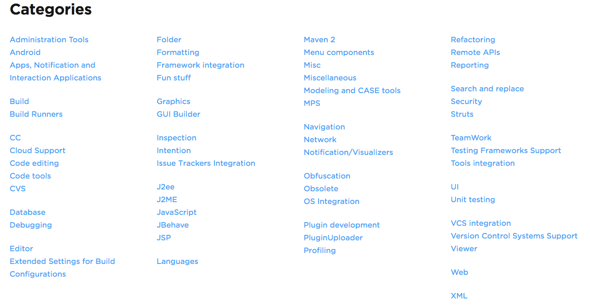
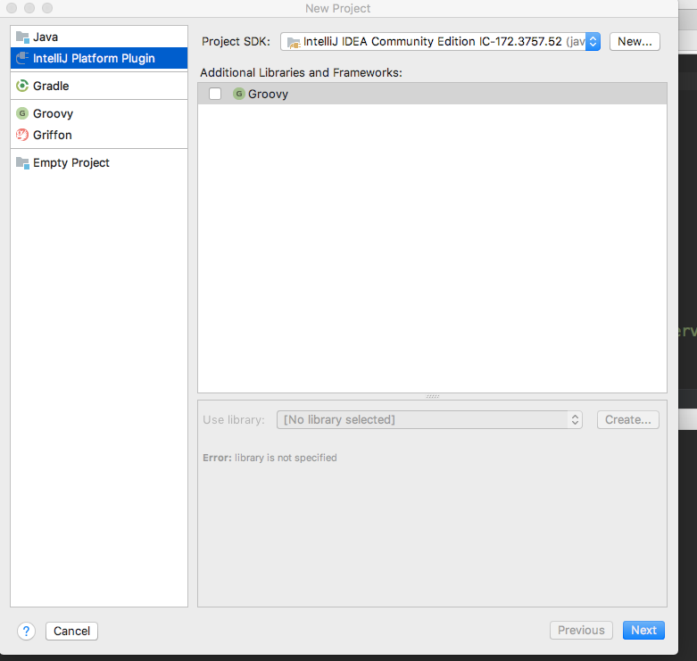
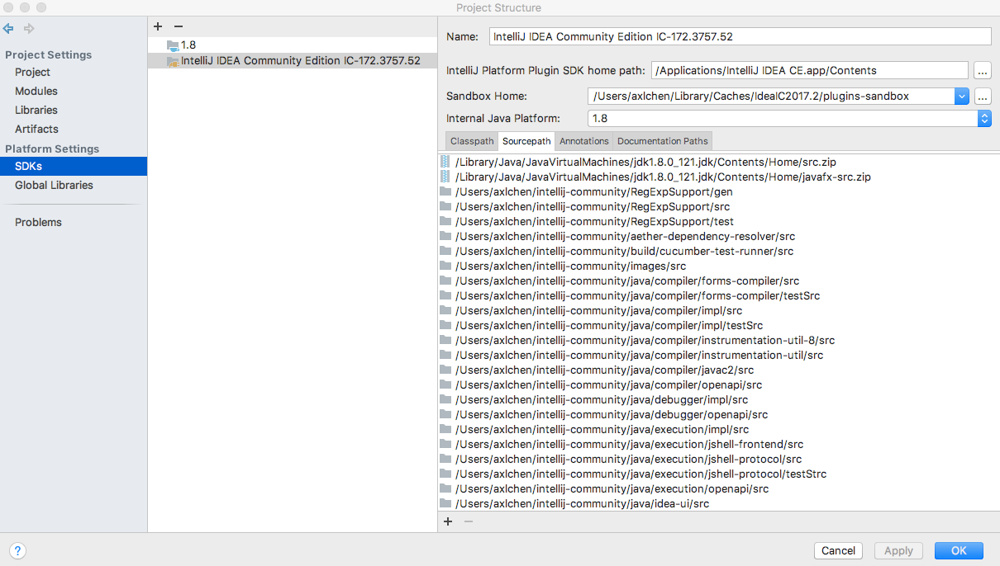
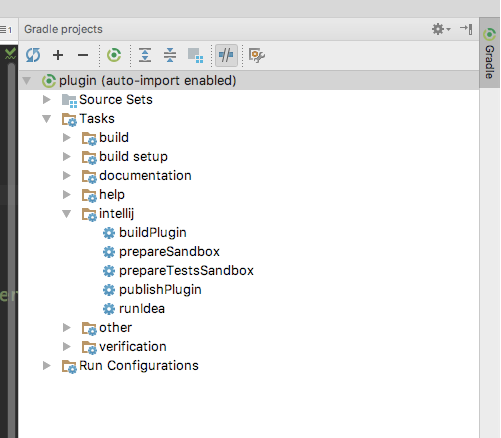

我们每天都在使用Android Studio进行开发，测试，review。在这过程中，免不了接触到各种IDE插件来帮助我们的工作，包括Android Studio本身其实就是在Intellij IDEA的基础上添加各种插件以及针对性的优化形成的。所以其实为Android Studio开发插件，其实很多情况下也适用于Itellij IDEA（只要没有依赖特定平台的特性）。那么，既然插件这么厉害，为什么我们不去自己学着写一写呢？
什么是插件
维基百科上关于插件的定义如下：
插件（又译外挂，英文为Plug-in、Plugin、add-in、addin、add-on、addon或extension）是一种电脑程序，通过和应用程序（例如网页浏览器，电子邮件客户端）的互动，用来替应用程序增加一些所需要的特定的功能。最常见的有游戏、网页浏览器的插件和媒体播放器的插件。
应用程序之所以支持插件的使用原因很多，主要包括：使得第三方的开发者可以对应用程序进行扩充、精简，或者将源代码从应用程序中分离出来，去除因软件使用权限而产生的不兼容。
插件的类型
依据官方文档的说法，主要有以下4中类型的插件
Custom language support
运用Intellij平台的强大的开放性和扩展性，添加对一种编程语言的支持，如文件识别，词法分析，语法高亮，代码补全，语法检查等等，我使用过或著名的这类型的比较出名的插件有
Framework integration
整个编程框架的功能，这种插件进行web开发的话会接触的更多，Android开发的话，本身Android插件就是一个最好的例子
Tool integration
在IDE内与第三方工具交互，例如如果我们的开发电脑的usb被禁或没有数据线的话可以用以下插件
User interface add-ons
改变IDE的界面，例如各种主题插件
实际上，还有各种类型的扩展平台功能的插件，在官方插件网站上列出的插件种类有如下图列出的这么多种

插件能干什么
实际上，插件的类型的部分就很好的解答了这个问题。通过应用插件，IDE可以为我们构建开发环境、可以整合我们与优秀的工具，如git，可以批量生成代码，减少重复的敲样板代码，可以帮助我们寻找代码的问题，提高代码的质量……
Intellij插件开发与Android Application开发的对比
作为一个Android开发者，从Android Application开发的角度来类比就最恰当不过了。为Intellij平台写插件就好像为Android平台写应用。Intellij这个平台就相当于一个系统，插件就是各种应用程序，Intellij平台向外提供各种API来改变它的UI和行为，给开发者使用。
而事实上，Intellij插件开发的框架架构和Android应用程序有挺大的相似之处
插件组件
vsAndroid 四大组件Intellij提供了Action、Extension、（Application/Project/Module）conponent、Service等插件的组件，像Android四大组件一样，这些组件都需要在plugin.xml文件了注册，这些基本的组件了插件的主要功能
UI component
vsView/widgetUI界面的基本组件
plugin.xml
vsAndroidManifest.xmlplugin.xml就是插件的说明文件，提供了插件所有的基本信息：名字、作者、联系方式、使用说明，最重要的是插件组件的声明，想AndroidManifest.xml文件一样，Intellij通过这个文件读取并收集插件的信息，在适当时候调用通过plugin.xml注册的组件的功能。
插件开发环境搭建
进行Intellij平台的插件开发，应该先安装如下的软件或下载相关代码
- JDK(Java相关的开发，这个必备了)
- Intellij IDEA Community
- Gradle(可选)
- Intellij IDEA Community源码（可选，不过最好有）
使用Plugin DevKit
Intellij IDEA提供了一个工具专门给开发者开发插件，值得一提的是，Plugin DevKit本身也是插件，不得不说Intellij功能真的是强大。
此种方式建立插件工程比较简单 File->new->project,打开new project对话框，在左边选择Intellij Platform Plugin后一直确认即可

Plugin DevKit的使用比较简单，这里不再叙述，下面重点说说用为插件工程引入gradle构建的功能
创建Project SDK
在上图所示创建项目的时候，有个Project SDK的选项。写插件的时候，我们不只依赖JDK了，毕竟我们要用到Intellij IDEA的API。这时用到的是Plugin SDK，如果还没有的话，点击new新建，选择 Intellij Platform Plugin SDK，路径选择你的Intellij IDEA的安装目录。
关联源码
下载源码
git clone --depth 1 git://git.jetbrains.org/idea/community.git idea创建工程后，依次点击File / Project Structure / SDKs，选择Plugin SDK，点击SourcePath，按“+”号选择源码目录

使用gradle构建
其实环境搭建这样基本的开发步骤，本来是不想讲的，不过，官网关于使用gradle的说明非常简要并且我发现其实有问题的，在多次碰壁和阅读其他插件的源码才搞明白怎样使用，详细步骤如下
- 创建一个gradle工程，在上图的左边选择
Gradle，按提示完成 在build.gradle文件加入如下内容
buildscript { repositories { maven { url "https://plugins.gradle.org/m2/" } maven { url 'http://dl.bintray.com/jetbrains/intellij-plugin-service' } } dependencies { classpath "gradle.plugin.org.jetbrains:gradle-intellij-plugin:0.1.10" } } apply plugin: 'org.jetbrains.intellij'
此时编译工程，其实是无法构建的，因为还没有用到intellij这个gradle插件的命令，加入如下内容即可
intellij {
plugins 'android' //使用android插件
version 'IC-2016.2.5' //指明使用的Intellij IDEA版本
pluginName 'xxxx' //插件名字
alternativeIdePath 'path to android studio'//如果想在Android Studio里运行，给出Android Studio的路径
//下面两个选项跟适配Intellij的版本有关，具体可查看官网
updateSinceUntilBuild = false
sameSinceUntilBuild = false
}
其中最重要的是version这一项，如果注释掉这一项的话，gradle默认去下载最新版本的Intellij IDEA源码，麻烦的地方就在此，每次有版本更新，编译时就会去下载源码，即使本地仓库已经有这个依赖，所以最好指定一个版本的源码，避免多次下载源码，并且有时下载的速度很慢。
在官网上可以查看详细的版本列表
如果在右侧gradle的tool view里看到tasks里有intellij的选项

双击runIdea或者命令行输入gradle runIdea，即可构建插件